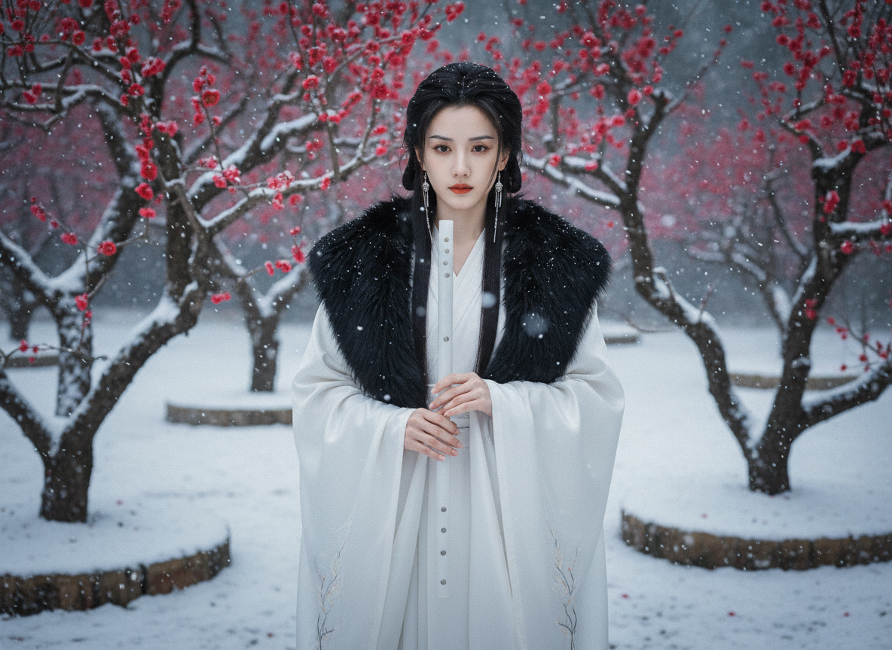
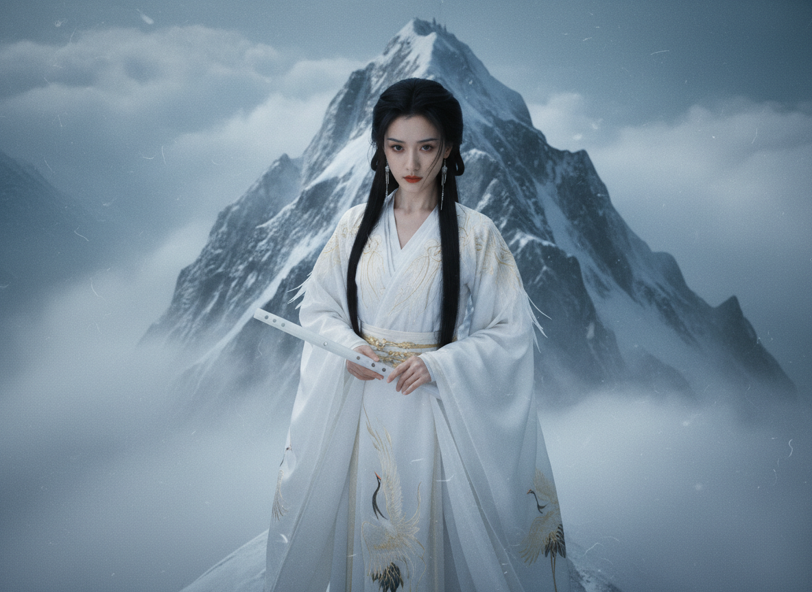

天榜第九 · 玉笛暗卫 · 服化道图鉴
场景： 王府/夜宴潜行。强调如月光般不可捉摸的透明质感。
服饰： 月白色蝉翼纱外罩，内衬银丝软甲。高开叉长裙配窄口束脚裤。
妆发： 坠马髻配冷银发带，珠光银眼影，呈现清冷易碎感。

场景： 极寒雪原。强调物理上的保暖质感与傲雪孤高感。
服饰： 重磅真丝哑光缎面，肩披黑狼毫领大氅。黑色犀角皮护腕。
妆发： 高马尾配玄色发簪。素面朝天，仅唇部点染朱砂红。

场景： 高海拔决战。最高规格战袍，强调绝对的力量与轻盈。
服饰： 云母白缂丝长袍，镶嵌真实白鹤羽片。内藏暗扣可变劲装。
妆发： 冷玉叶片编发，眉宇间尽显英气。玉笛横握，仙姿卓然。